×

❮
❯
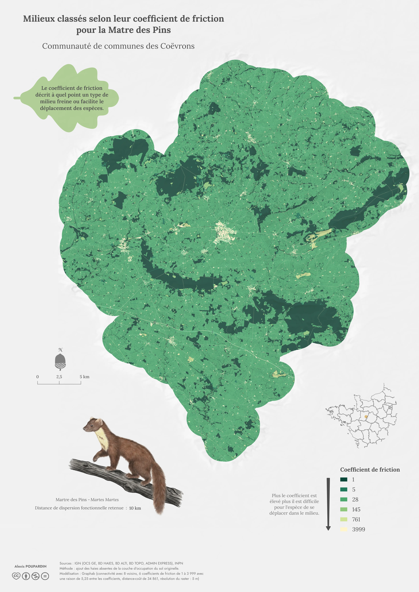
Land cover classified according to their resistance to movement for the European pine marten
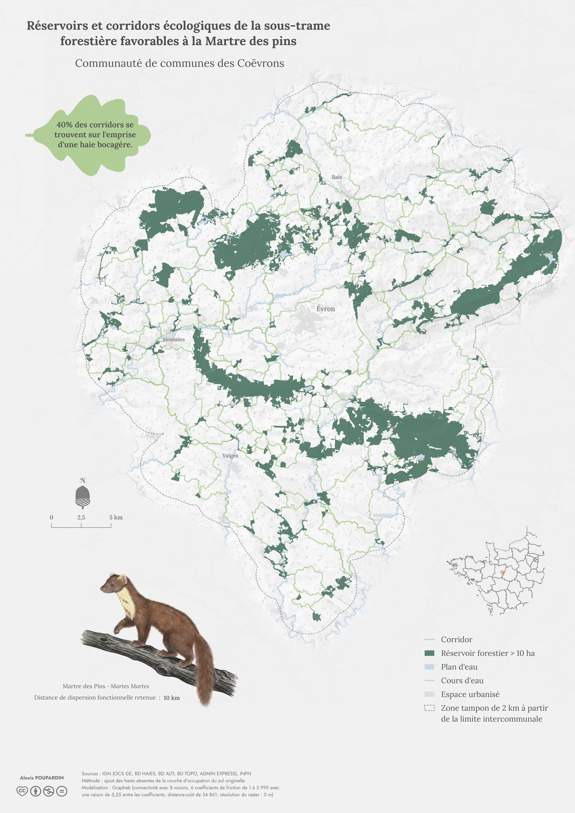
Habitat patches and ecological corridors of the forest sub-network suitable for the European pine marten
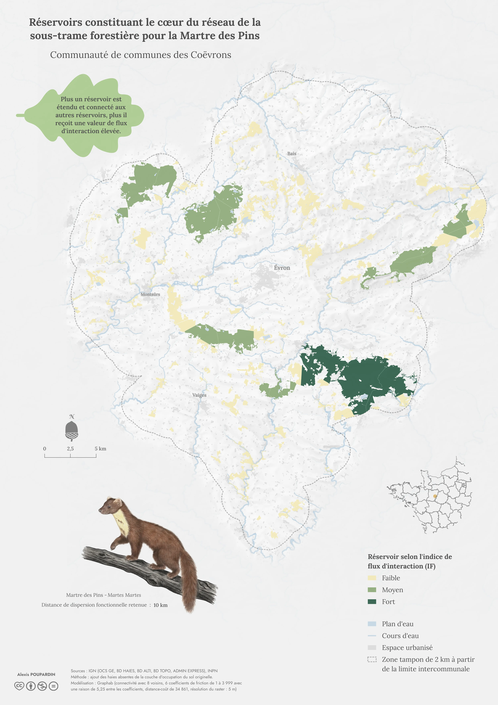
Core habitat patches of the forest sub-network for the European pine marten
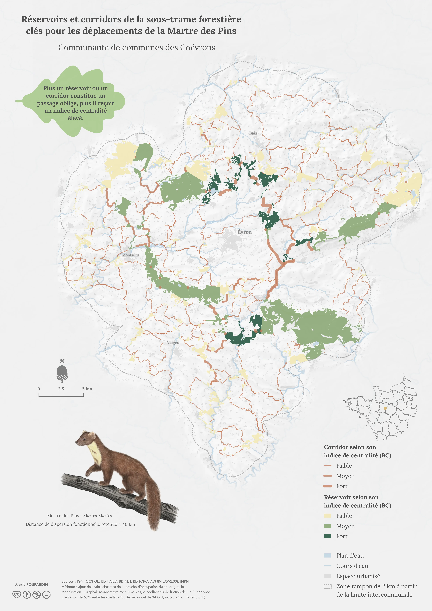
Key forest sub-network habitat patches and corridors for European pine marten movement
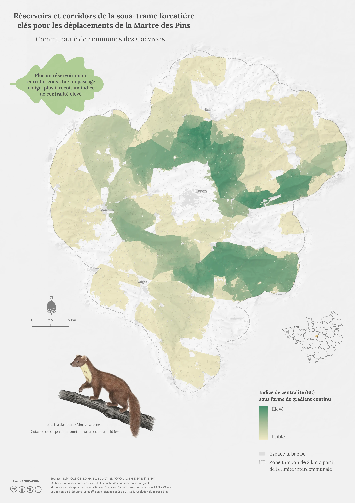
Key forest sub-network habitat patches and corridors for European pine marten movement (raster format)
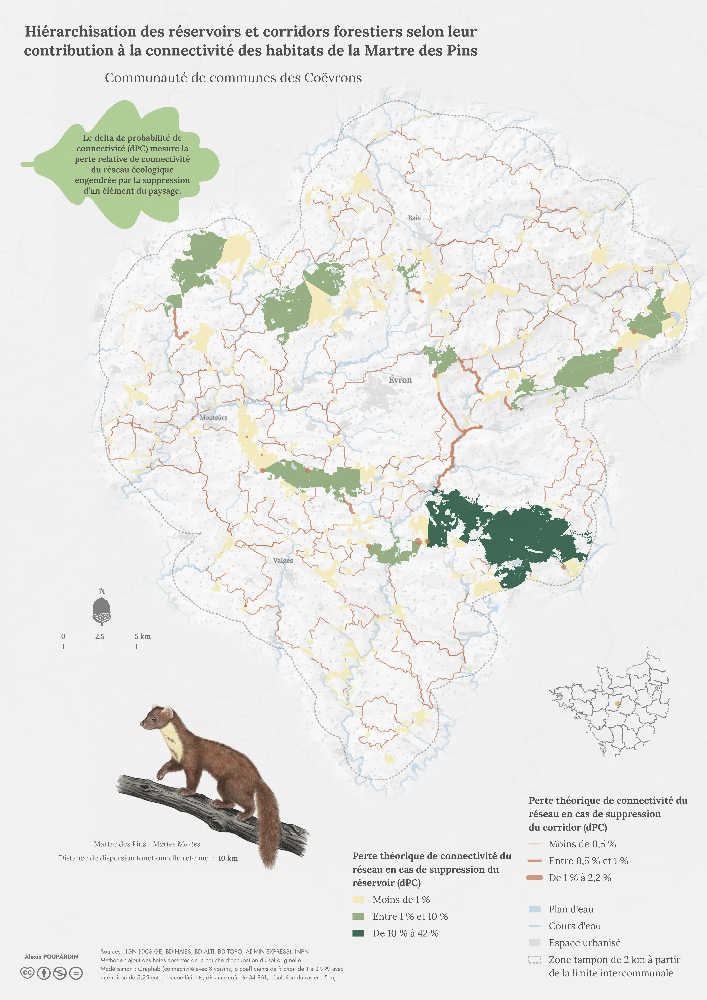
Ranking of forest habitat patches and corridors according to their contribution to European pine marten habitat connectivity
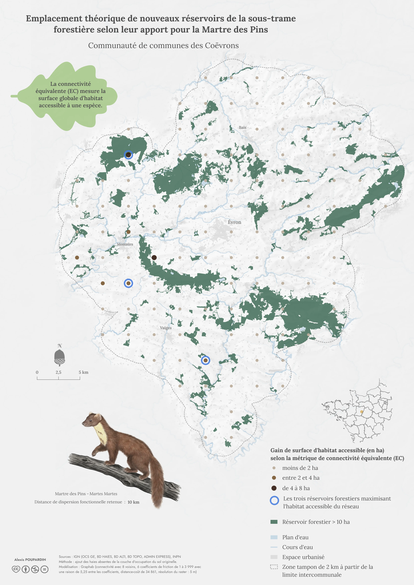
Potential locations for new forest habitat patches based on their contribution to European pine marten habitat connectivity
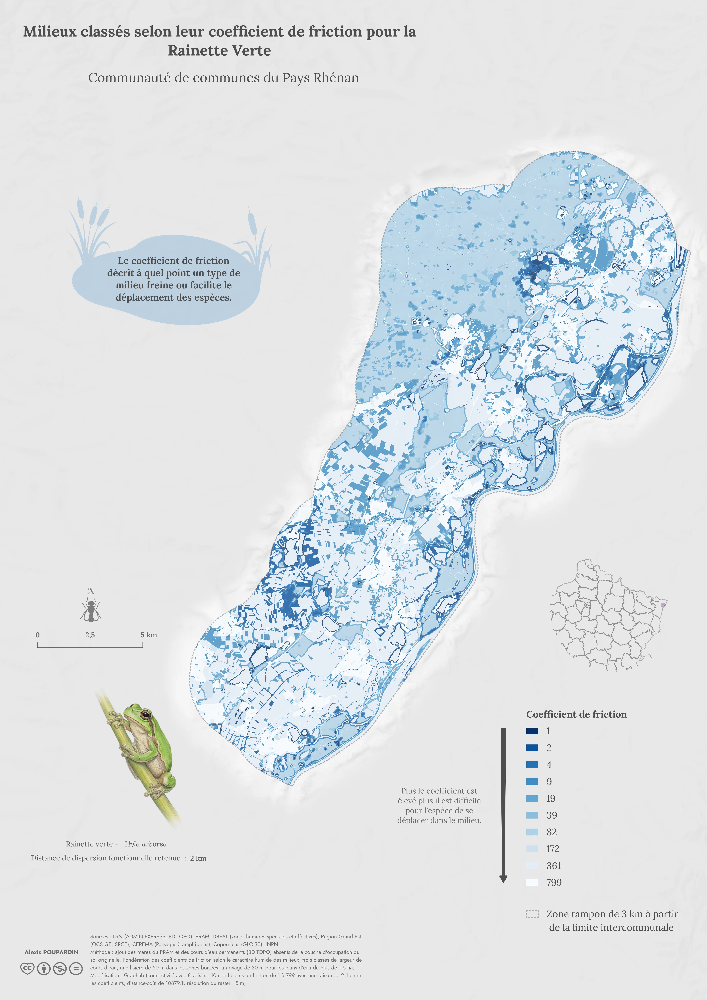
Land cover classified according to their resistance to movement for the European green tree frog
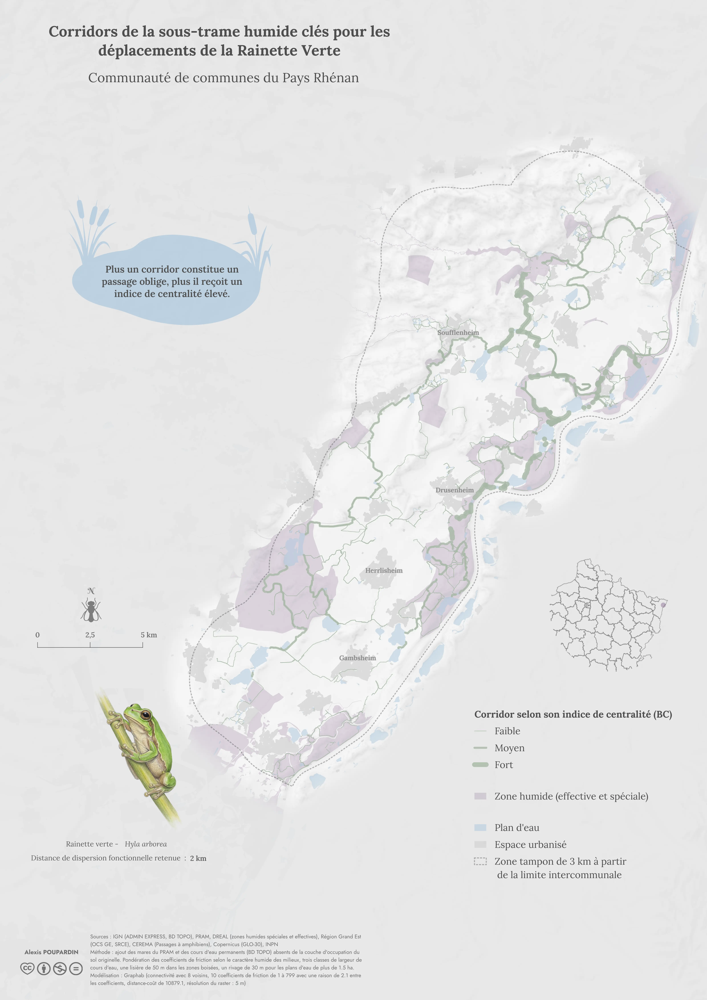
Wetland sub-network corridors that are key to European green tree frog movements
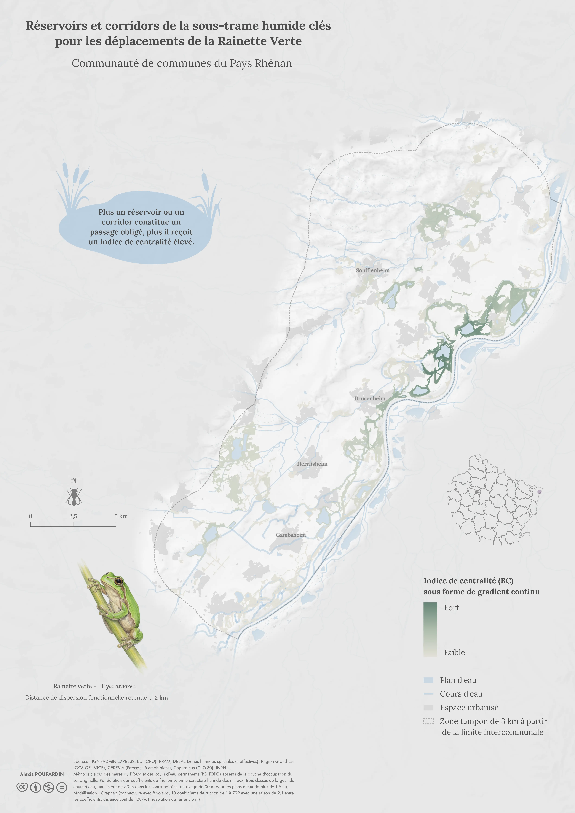
Wetland sub-network corridors that are key to European green tree frog movements (raster format)
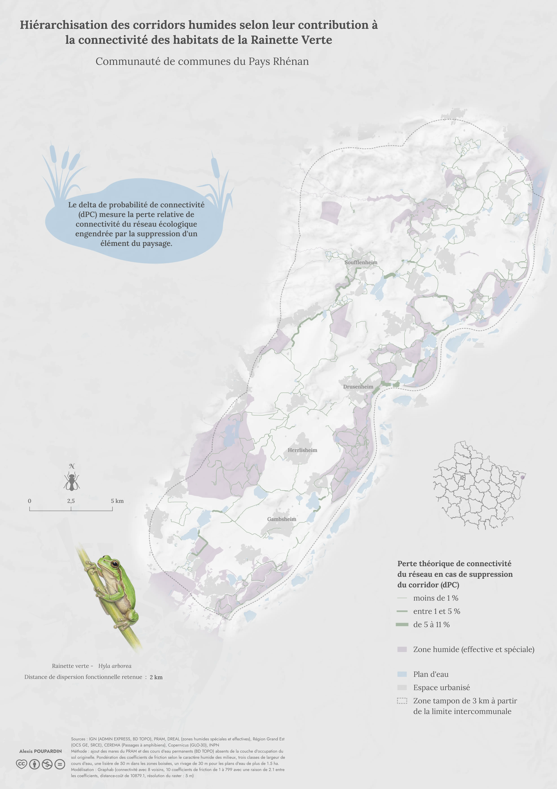
Ranking of wetland corridors according to their contribution to European green tree frog habitat connectivity
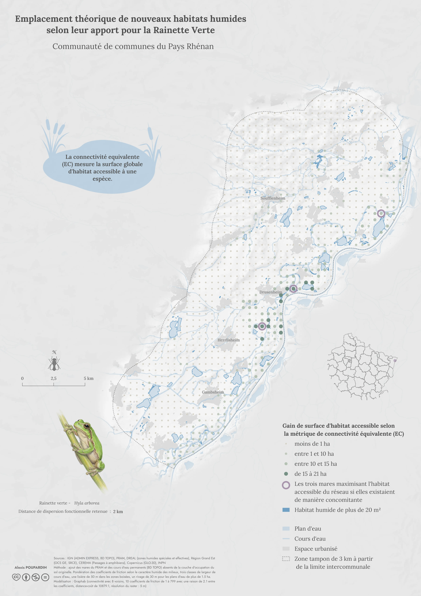
Potential locations for new wetland habitats based on their contribution to European green tree frog habitat connectivity
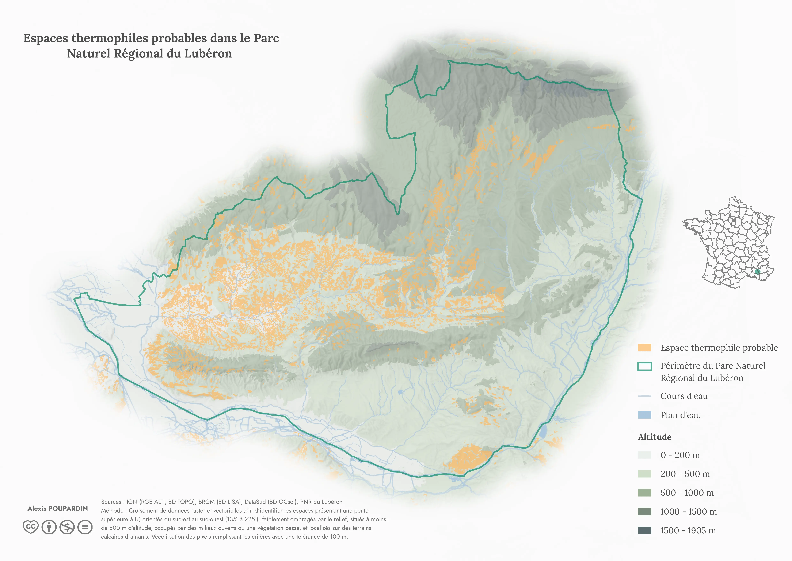
Probable Thermophilic Habitats in the Luberon Regional Nature Park